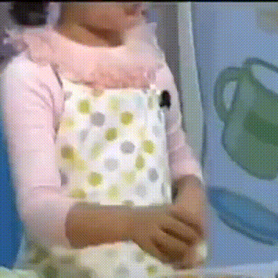

Member-Danielle
·牟智慧（朝鲜语：모지혜 Mo Ji-hye，2005年4月11日—），英文名为丹妮尔·马什（Danielle Marsh），是一名韩澳双籍歌手及演员，现为ADOR旗下女子音乐组合NewJeans成员之一。
·Danielle的父亲和母亲的国籍分别为澳大利亚及韩国，因此拥有两国的国籍，家人除了父母还有一位姐姐。幼时曾担任儿童模特儿，并于2011年出演tvN电视台的儿童节目《彩虹幼儿园》以及JTBC电视台的综艺节目《神话放送》。
·2022年7月22日，ADOR公布Danielle为NewJeans的成员之一。8月1日，以专辑《New Jeans》正式出道。

